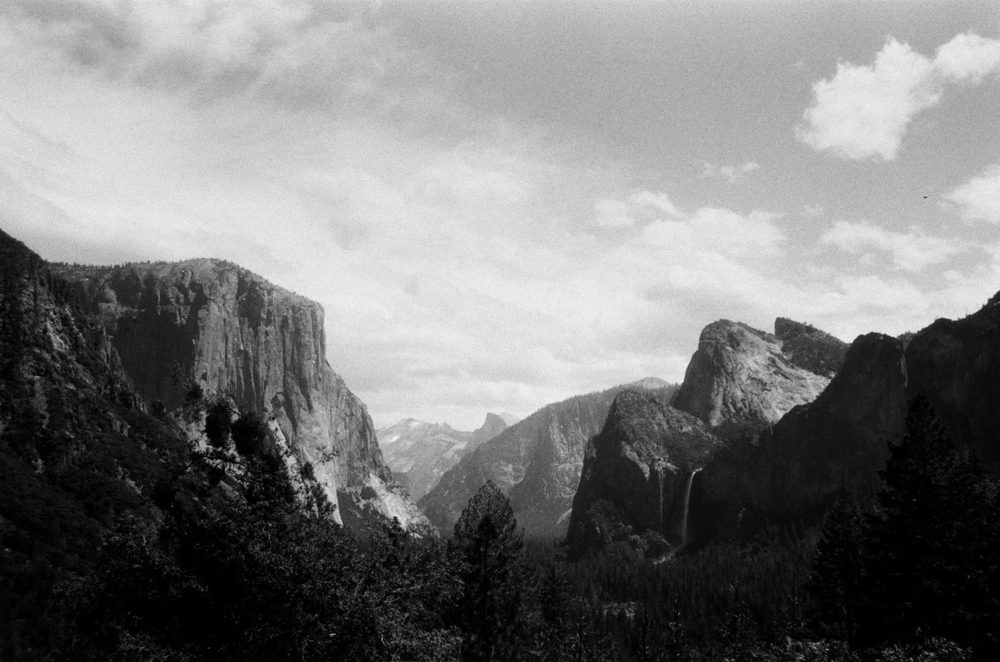

Surf
Early sessions, cold water, and the patience to wait for the right set. Reading a swell isn't so different from reading a spectrogram: energy moving through a medium, and learning to see the pattern in the noise.
Off the clock
The other half of me. I surf, I climb, and a surprising number of my ideas show up on the paddle back or the walk-off.

Tunnel View, Yosemite
El Capitan, Half Dome and Bridalveil Fall, in a photo I took and the same frame as 400 columns of ASCII. Hover or drag across the print to develop it.
Moments